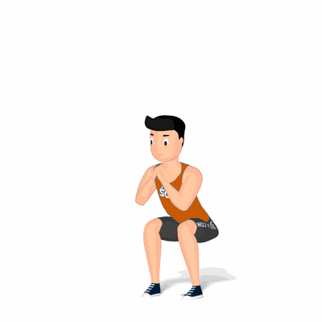

Agachamento com Salto

Uma variação de agachamento que trabalha, além do fortalecimento de pernas, aumenta a força explosiva, potência muscular, a força de tendões e de ligamentos. Possuí uma dificuldade de nível intermediário.
Ficha Técnica
Tipo: Funcional
Grupo Muscular: Perna
Aparelho: Nenhum
Músculos: Nenhum
Como realizar
- Posicione-se em pé, tronco reto e pés na largura dos ombros;
- Realize o agachamento, mantendo abdômen contraído e força nas pernas, descendo até os joelhos ultrapassarem ligeiramente a ponta dos pés, com o quadril flexionando para trás durante o movimento, inclinando ligeiramente o tronco;
- Durante o movimento de subida realize um salto, impulsionando o máximo que conseguir;
- Na fase descendente do salto, procure cair na mesma posição referencial de saída, mas já em direção a um novo movimento de agachamento.
 RC STORE
RC STORE